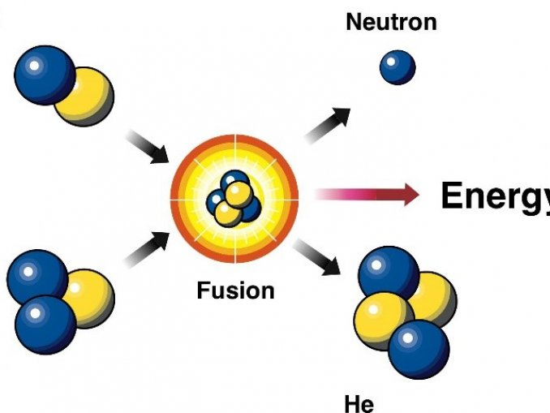

El avión más grande del mundo logra un nuevo vuelo récord sobre el desierto de Mojave
El avión más grande del mundo se elevó a los cielos para demostrar que tener una envergadura de 117 metros (385 pies) no le impide recorrer la distancia, después de romper otro récord mundial al volar durante seis horas seguidas. Roc de Stratolaunch, un vehículo de lanzamiento para aviones hipersónicos y actualmente el avión más grande del mundo, completó un vuelo de seis horas sobre el desierto de Mojave en California antes de aterrizar de regreso en el mismo aeropuerto, que es más largo que nunca en sus vuelos anteriores.
Propulsado por seis motores y esencialmente del tamaño de dos aviones comerciales unidos a un ala, Roc es un banco de pruebas que se utilizará para lanzar la tecnología de vanguardia real de Stratolaunch, el vehículo hipersónico Talon. Utilizado para probar condiciones hipersónicas en escenarios reales, el Talon supuestamente se utilizará para el diseño de la próxima generación de aviones y misiles hipersónicos.
La evaluación exhaustiva de las condiciones de liberación proporcionará datos para reducir los riesgos y garantizar una liberación limpia y segura de Talon-A durante las pruebas futuras, dijo el CEO y presidente Zachary Krevor en un comunicado a Space.com.
Cómo la fusión nuclear puede cambiar el mundo
La ignición por fusión nuclear se logró por primera vez en la Instalación Nacional de Ignición (NIF) del Laboratorio Nacional Lawrence Livermore este mes. Esta primicia histórica muestra que podemos crear una fusión controlada en el laboratorio que libera más energía de la que ponemos. Y aunque el camino hacia una planta de energía de fusión comercial es largo, este es un gran hito. Como algunas personas lo han descrito, tenemos la física abajo, ahora es solo un problema de ingeniería.

el mecanismo detrás de la generación de energía por fusión nuclear
Que tengamos la física baja es mayormente correcto, pero todavía hay espacio para el refinamiento y la parte de ingeniería es sin duda el obstáculo crucial. El evento logró Q = 1.54. Sacar la cantidad exacta de energía que pusiste es Q = 1, por lo que obtuvieron un 54 por ciento más. Varios comentaristas dijeron en línea que un objetivo realista para un reactor comercial sería algo más cercano a Q = 10.
Nuclear fusion is what powers the Sun and all the stars in the Universe. Under the enormous pressure and heat inside stars, lighter nuclei are pushed together, overcoming their electromagnetic repulsion, and merged into a heavier nucleus. This process releases a lot of energy simply because the energy-mass relation of the original elements is greater than the products. The difference is the energy that is released.
Tecnologia: Otras Noticias
Deje de presionar los botones de caminar, la mayoría en realidad no hace nada
El sitio web encontró a través de una encuesta de instaladores que el 70 por ciento había colocado termostatos falsos durante su trabajo. Las razones para instalar los termostatos falsos variaron, pero incluyeron todo, desde el abuso de los termostatos por parte de los comedores públicos que visitan, hasta evitar que los empleados se peleen por la temperatura en áreas donde los equipos sensibles a la temperatura se dañarán. En cada caso, en lugar de no tener termostato, o solo uno, p. en la oficina de un gerente: los tomadores de decisiones optaron por instalar un termostato falso y dar al público oa los empleados la ilusión de control.
La "batería de agua" gigante en los Alpes suizos finalmente está operativa
Una "batería de agua" gigante en los Alpes suizos finalmente está operativa, 14 años después de que comenzara la construcción. La central hidroeléctrica de Nant de Drance puede almacenar suficiente energía para cargar 400.000 baterías de automóviles.
Pronto podrás ejecutar hologramas en tu teléfono inteligente
Hace casi dos años, los investigadores del MIT lograron un gran avance: una tecnología que llamaron "holografía de tensor". Desde entonces, el proyecto ha seguido mejorando y, hoy en día, el equipo está trabajando con un sistema que, según dicen, es totalmente automático, resistente a las entradas del mundo real renderizadas y desalineadas, produce límites de profundidad realistas y corrige las aberraciones de la visión